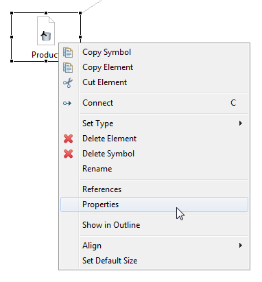
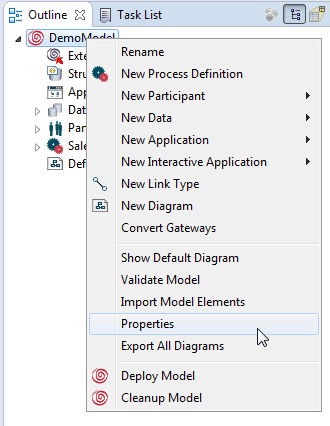
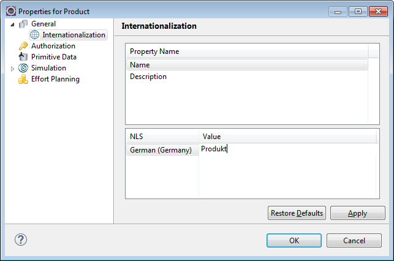

The @productnameonl@ Eclipse workbench provides a property page for models and each model element. A property page contains properties, which can be viewed or edited. General Properties are provided for each model or model element along with element specific properties.
To open a property page of a model element you have different options:

Figure: Open the Model Properties Page

Figure: Open the Model Properties Page
The following general properties are provided for models and model elements, besides element specific properties:
A Model OID or Element OID field displays the automatically generated internal object identifier. These fields are not editable.
The ID field displays the unique identifier of a model or model element. For details and restrictions on identifiers, please refer to chapter Model Element Identifiers of the Key Concepts.
This field is editable in case the Enable Auto Id Generation option is disabled in the Preferences view.
By default, an option is set for automatic Id generation. If you type in the name for your model or element, the Id is generated automatically by using its name. To build the Id, the spaces of the name are left out. All non-supported characters are replaced by an underscore.
If you like to disable automatic Id generation, disable the option Enable Auto Id Generation in the Preferences. Please refer to section Enable Auto Id Generation of chapter Setting Process Manager Preferences for details on this option.
The name you enter in the Name field of a model element might appear in references of UI sections as well as in Stardust Portal tables, depending on the element type.
In the Internationalization part you can set a locale specific name for the activity, as described in detail in chapter Native Language Support.

Figure: Internationalization of a Model Element